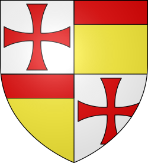
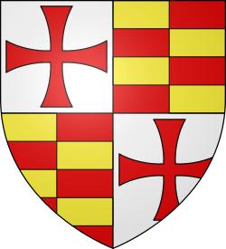
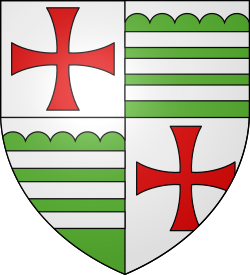
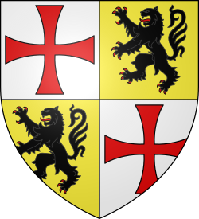
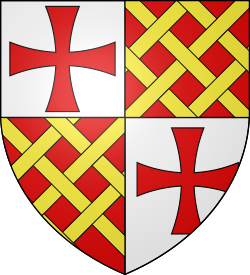
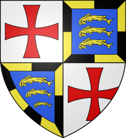

The
Knights Templar
The
Knights Templar
History - Grand Masters - Symbols
 Hugh de Payens (1070-1136)
Hugh de Payens (1070-1136)
Founder and Grand Master from 1118 to 1136
Hugh de Payens did not have a personal coat of arms, because heraldry only came into being in the 12th century.
 Robert de Craon (10??-1147)
Robert de Craon (10??-1147)
Grand Master from 1136 to 1147
Hugh de Payens' companion and one of the nine founding knights of the Order.
 Everard des Barres (1113-1174)
Everard des Barres (1113-1174)
Grand Master from 1147 to 1151
He gave up his position to enter the Cistercian Order as a simple monk in the Abbey of Clairvaux.
Bernard de Tremelay (10??-1153)
Grand Master from 1151 to 1153
Prior to his appointment, he was the preceptor of the Jura commandery of the Temple-lès-Dôle.
 André de Montbard (10??-1156)
André de Montbard (10??-1156)
Grand Master from 1154 to 1156
The last of the nine founders of the order. He gave up his position for the same reason as Everard des Barres.
Bertrand de Blanchefort (1109-1169)
Grand Master from 1156 to 1169
He introduced an in-depth reform to the rule (the "Retraits"), which specified the hierarchical usages.
 Philip de Milly (1128-1178)
Philip de Milly (1128-1178)
Grand Master from 1169 to 1171
He managed to restore a relationship of trust between the order and Amalric I, the King of Jerusalem.
Odo de St Amand (11??-1179)
Grand Master from 1171 to 1179
He was captured during the Battle of Marj Ayun and died in Saladin's jails in Damascus.
 Arnaud de Toroge (1110-1184)
Arnaud de Toroge (1110-1184)
Grand Master from 1180 to 1184
Former Master of Provence and Aragon, he was especially active in Spain during the "Reconquista".
Gerard de Ridefort (1141-1189)
Grand Master from 1184 to 1189
His pride and his mad hatred led to the disaster at the Horns of Hattin (30 000 crusaders killed).
 Robert de Sable (11??-1193)
Robert de Sable (11??-1193)
Grand Master from 1191 to 1193
An ally of Richard the Lionheart, he was elected after the Grand Master's position had been vacant for two years.
 Gilbert Horal (1152-1200)
Gilbert Horal (1152-1200)
Grand Master from 1193 to 1200
Durant his leadership, the quarrelling between the Knights Templar and the Hospitallers took on catastrophic proportions.
Philip de Plessiez (1165-1209)
Grand Master from 1201 to 1209
Under his leadership, the order reached the pinnacle of its development in Europe.
William de Chartres (11??-1218)
Grand Master from 1210 to 1218
He was heavily involved in the Spanish "Reconquista": the Knights Templar were highly influential in Iberia.
 Pedro de Montaigu (11??-1232)
Pedro de Montaigu (11??-1232)
Grand Master from 1218 to 1232
He proved to be highly diplomatic in reconciling the King of Jerusalem, the pope and the Hospitallers.
 Armand de Perigord (1178-1244)
Armand de Perigord (1178-1244)
Grand Master from 1232 to 1244
Died during the Battle of La Forbie, where the Knights Templar, the Hospitallers and the Teutonic Knights clashed with the Sultan of Egypt.
 Richard de Bures (11??-1247)
Richard de Bures (11??-1247)
Grand Master from 1244 to 1247
His name was derived from the bailiwick of Bures-les-Templiers on the Côte d'Or, the order's birthplace in France.
 William de Sonnac (11??-1250)
William de Sonnac (11??-1250)
Grand Master from 1247 to 1250
Wise and cautious, he had the order's archives codified before putting them in a safe place.
 Renaud de Vichiers (1198-1252)
Renaud de Vichiers (1198-1252)
Grand Master from 1250 to 1252
He let Joinville steal money from the order to free Louis IX from the Mamelukes.
 Thomas Berard (12??-1273)
Thomas Berard (12??-1273)
Grand Master from 1252 to 1273
This enigmatic master's career within the order is unknown to historians.
 William de Beaujeu (1233-1291)
William de Beaujeu (1233-1291)
Grand Master from 1273 to 1291
Despite putting up an heroic defense, he succumbed during the Muslims' final assault against the city of Acre.
 Thibaud Gaudin (1229-1292)
Thibaud Gaudin (1229-1292)
Grand Master from 1291 to 1292
He died of exhaustion in trying to restart the organization that had been damaged by the last round of fighting.
 Jacques de Molay (1244-1314)
Jacques de Molay (1244-1314)
Grand Master from 1292 to 1312
After being held captive for seven years by the Inquisition, he died at the stake on March 18, 1314.